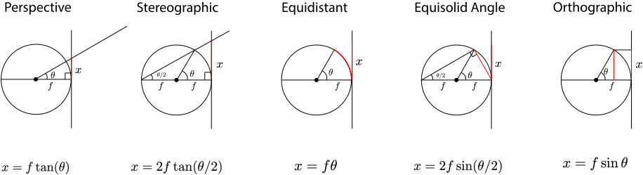

Visualization of projection models
three.js canvas may take a bit to load due to unoptimized raycasting. TODO: convert three.js raycast calls to vertex shader
Scroll down below three.js canvas to visualize texture on viewing sphere and imaging planes